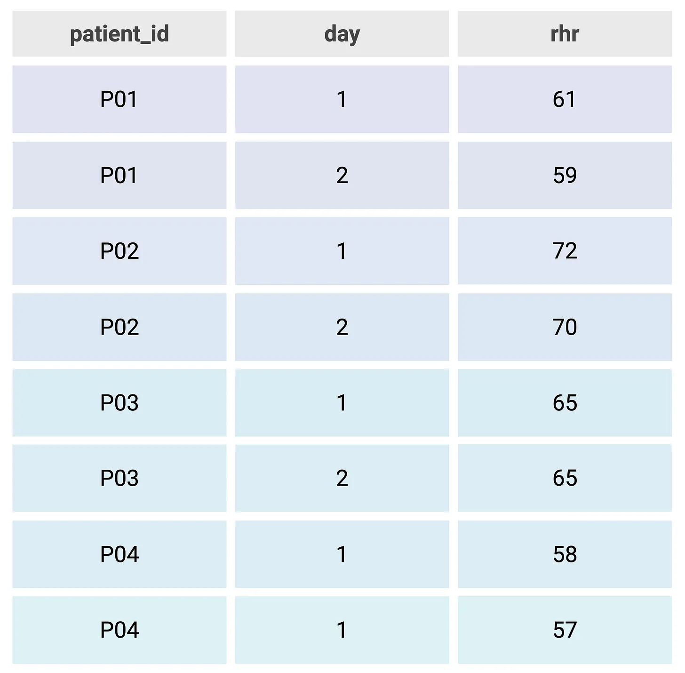
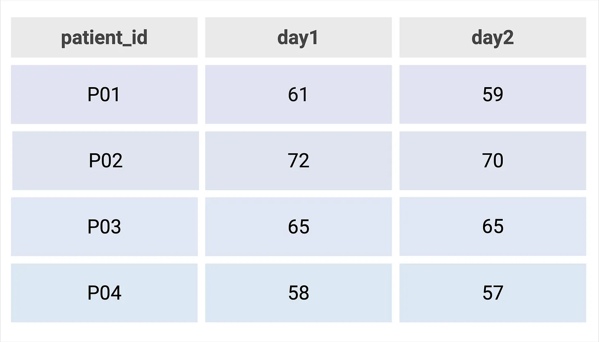

Tidy Data
and why it's important
Working as data scientist you quickly learn the importance of keeping your data tidy. Storing data in a tidy format as soon as you start collecting the data and maintaining it will save you hours of data cleanup and many headaches when running analyses. I’ve experienced the downsides of messy data firsthand so in this post, I will teach you what tidy data is, why it’s important, how to keep your data tidy, and some examples of tidy and not-so-tidy data.
“tidy datasets are all alike, but every messy dataset is messy in its own way.” -Hadley Wickham
WhatIf you are unfamiliar with the term “tidy data” you may think it describes datasets that are free of typos or are sorted according to a certain variable. The term tidy data actually describes a certain structure to store data such that, each row represents a single observation, each column represents a single variable, and each cell is a single value. (Fig 1.) This concept was popularized by Hadley Wickham, who is the creator of some quite popular R packages like ggplot2 and dplyr.
WhyTidy data provides a structured way to store data such that a data scientist or a computer algorithm can efficiently extract the data in a repeatable fashion. This is important for data science analyses because it allows for the same pipeline to be applied to new datasets with confidence. Tidy data also allows for streamlined data exploration, data transformation, and visualization as most packages in R like ggplot2 expect tidy data.
HowThe best way to keep your data tidy is to start from the beginning. As soon as you start collecting data, try to store it in a tidy format. If this is not possible, you will have to embark on the task of data cleanup. Luckily, there are packages in R that can assist with this. By using operations such as pivoting, mutating, and filtering as well as handling missing data, you can convert your messy data to tidy data. This task is extremely important for data analysis and visualization.
ExamplesThis dataset (Fig. 1) shows what tidy data look like. Notice how each column represents a single variable and each row is its own observation.
Fig. 1 Patient resting heart rate (RHR) in tidy format
This second dataset (Fig. 2) shows an example of non-tidy or “messy” data. The second and third column contain the same variable and each row contains two observations.
Fig. 2 Patient resting heart rate (RHR) in “messy” format
ConclusionHopefully, after reading this post you are more familiar with the concept of tidy data, the importance of the tidy format, and how to keep your data tidy. Understanding this concept will improve your efficiency of data analysis as well as help you understand the data you are working with.